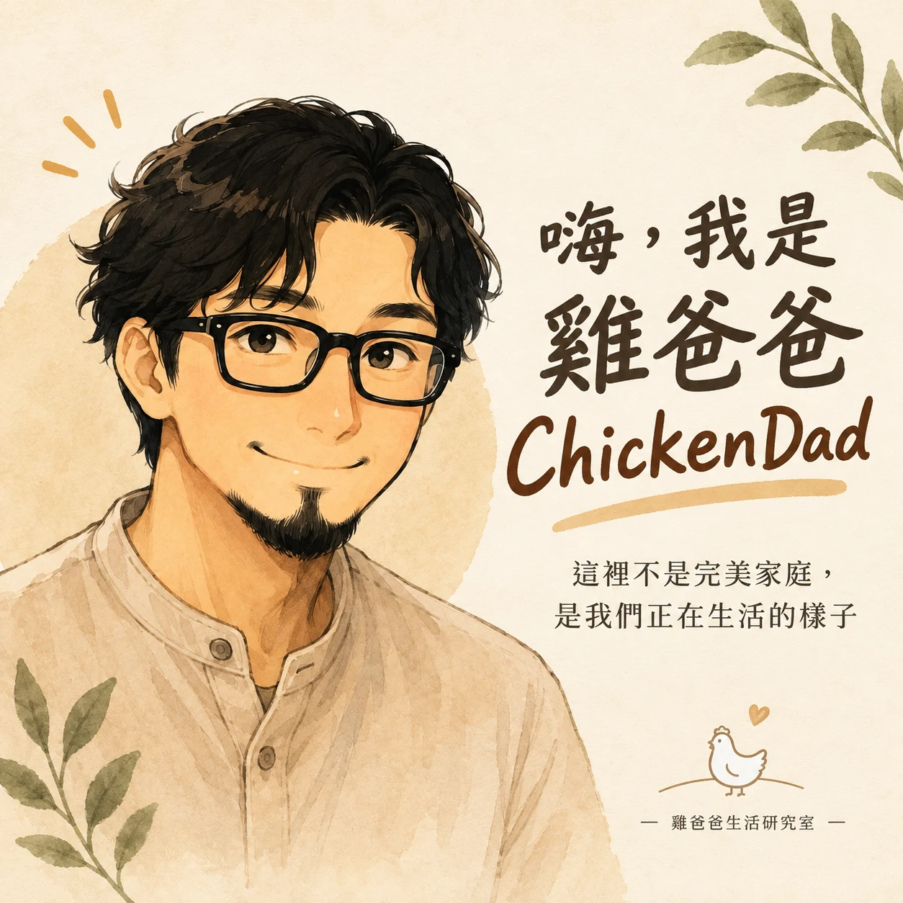
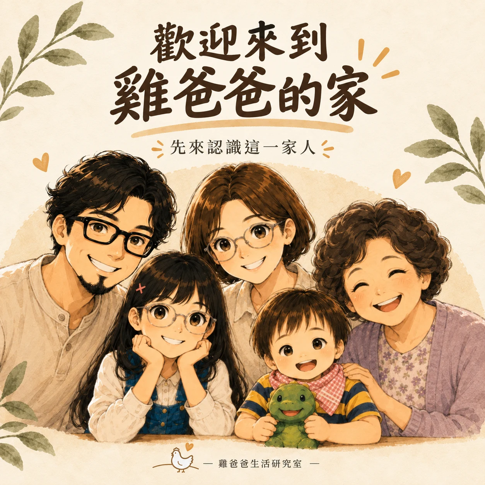
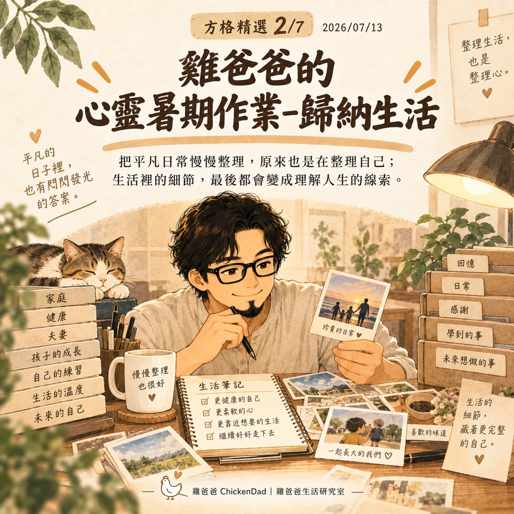
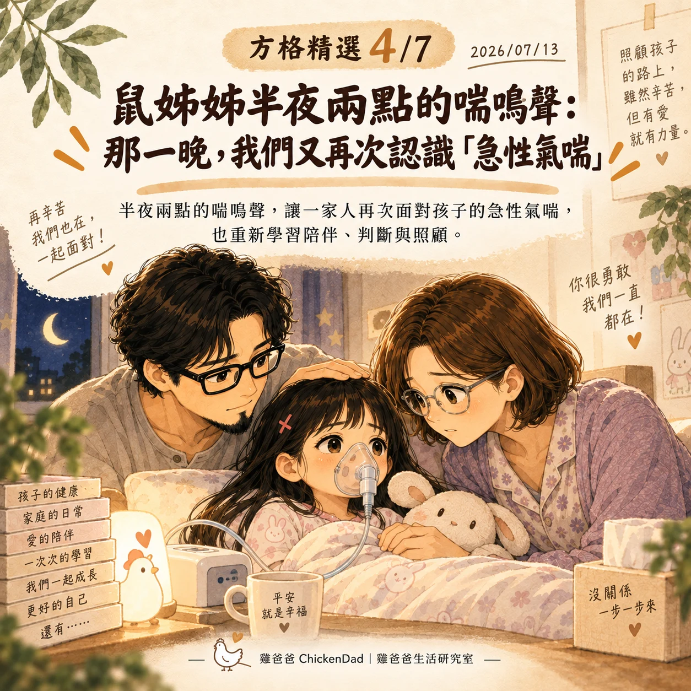
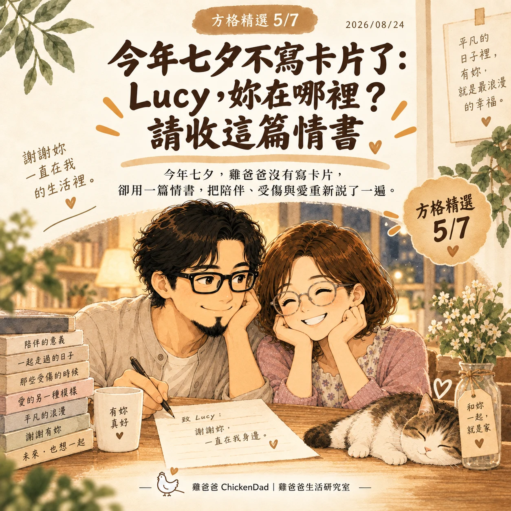
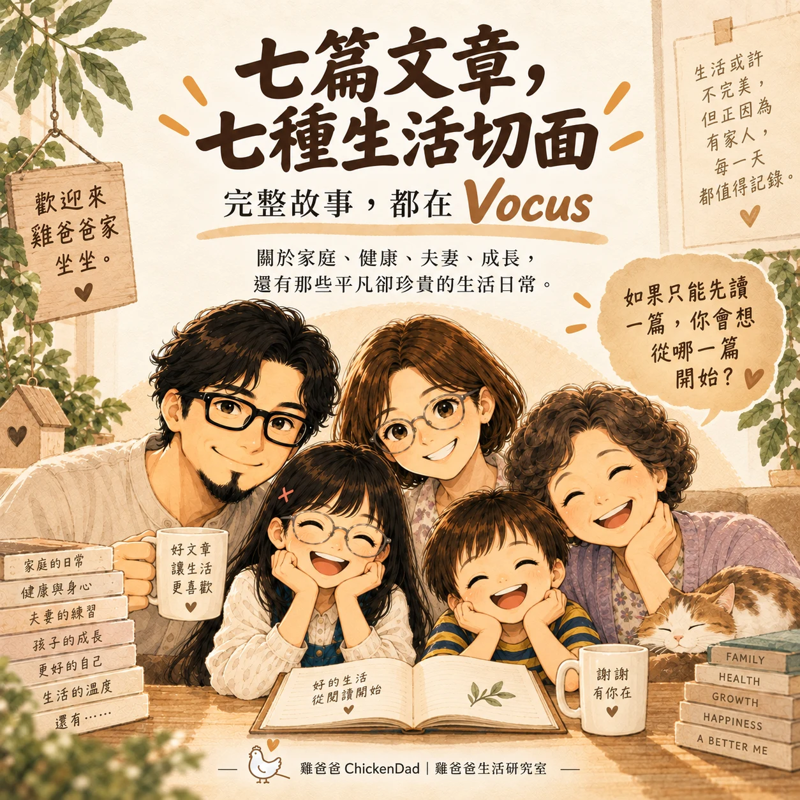

—重新整理一遍，才發現其實是篇很長的 Threads 開幕廣告
有些帳號消失的時候，很像搬家。東西還在，故事也還在，只是原本的門牌突然不見了。之前雞爸爸的 Threads 帳號被停用之後，其實有一段時間沒有很想重來。一方面覺得麻煩。另一方面也忍不住想：「都這麼久了，難道又要從『嗨，我是雞爸爸』開始嗎？」
結果最近重新整理 Instagram，又開始把一些 Vocus 文章做成 Reel，雞爸爸反而突然覺得—好像，也不是不可以，既然都重新開張了，那就乾脆認真一點。
這次不急著搬文章，也不急著證明自己到底寫過多少東西。試著從最基本的三件事開始：我是誰？這一家人是誰？如果第一次來，又可以從哪裡開始認識我們？
第一篇：歡迎來到雞爸爸生活研究室

重新開帳號之後，雞爸爸第一個想的不是：「要貼哪一篇 Vocus？」反而在想，如果是：「如果有一個完全不認識我的人，今天第一次走進來，他會看到什麼？」
所以第一篇沒有放文章連結，也沒有急著聊健康、棒球、音樂。
只是先說：歡迎來到雞爸爸的家，這有雞爸爸、鼠媽媽、鼠姊姊、龍弟弟，還有兔阿嬤，不是什麼完美家庭，比較常見的版本反而是小孩不睡、有人生病、下雨趕行程、有人鬧脾氣，或者某個很普通的晚上，突然冒出一句讓雞爸爸記很久的話。
有時真正值得留下的，不是什麼驚天動地的大事，反而是：
今天誰哭了、誰笑了、誰突然長大了一點... 所以第一篇只想做一件事，把門打開。
第二篇：先來認識雞爸爸一家人

第二篇開始介紹角色。
雞爸爸是山羊鬍、戴眼鏡、容易想太多的那位，研究家庭、健康、棒球，最後研究自己。
鼠媽媽是家裡最重要的核心，有時以為在記錄生活，其實是在記錄她怎麼把家給撐起來。
鼠姊姊正勇敢地想摘下遠視眼鏡，也常常在爸爸以為自己已很懂小孩時，重新上一堂課。
龍弟弟目前的人生主軸很清楚：車車、音樂，以及研究說什麼話可以讓大人立刻行動。
兔阿嬤過著退休生活，是每天孩子回家第一時間跑去找的慈祥阿嬤，是家裡溫柔的底座。
介紹完大家後，突然又重新確認了一次：「雞爸爸」真的從來不只是一個人的樣子。
是這一家人一起生活之後，才慢慢長出來的角色。
第三篇：第一次來，就先從這七篇開始




接著遇到另一個問題，雞爸爸現在 Vocus 已經有一百二十多篇文章。
如果有人第一次來，總不能很熱情地說：「歡迎，請從第一篇開始閱讀。」
大概還沒認識雞爸爸，就先把人嚇跑，所以使用格編幫雞爸爸挑的七篇曾入圍方格精選、也很像「雞爸爸生活研究室縮影」的故事。
有寫著寫著才找到自己的〈方格新手最後一天：寫著寫著，雞爸爸終於找到自己的樣子〉也有把生活重新整理一次的〈雞爸爸的心靈暑期作業－歸納生活〉
有原本想練背最後變成推鞦韆專員的爸爸、有鼠姊姊半夜兩點突然喘起來全家重新學習判斷與陪伴、有寫給鼠媽媽的七夕情書、有四十四歲後雞爸爸開始慢慢讀懂的健康與血管...
有家庭、夫妻、親子、健康、中年，但雞爸爸後來發現，它們最後其實都在寫同一件事：生活過了一陣子以後，我們到底從裡面看懂了什麼。
然後，雞爸爸突然開始玩 Reel
這次重新整理 Instagram，雞爸爸自己都沒想到，用IG做 Reel 好像滿好玩的。
寫文章要有前因後果、有鋪陳、有轉折，最後最好還要留一點東西給自己想。結果開始把文章改成 Reel 之後才發現，根本是另外一種語言。四、五十秒，幾張圖，一句一句文字，再加一點音樂...
第一支做了：「雞爸爸」原來是一家人的樣子。第二支是：Lucy，妳在哪裡？
第三支則是：歸納生活，原來也是在整理自己。
雞爸爸開始理解，為什麼現在有些人願意看四十秒影片，卻不一定願意坐下來讀兩千字文章。有時不是文章不好，有些東西本來就需要畫面、聲音、節奏，甚至那幾秒鐘的停頓。
像之前有一篇改了很久沒有發的文章《哀人(i)》是在討論音樂作品的。改了好久，雞爸爸一直覺得少了點什麼。後來才發現，因為那本來就是一個「必須使用聽覺」才能共情共感的內容，或許以後有些故事適合寫成文章，有些，反而應該讓它變成 Reel。
PS.Reel貼到Vocus真的不優，可以撥空來雞爸爸IG看
如果有天你也必須重新開始自己的某一段生活
這次經驗很特別，雞爸爸不禁會想如果有一天必須歸零生活...
你會先把什麼留下來？又會決定不再帶走什麼？
當然，前面寫了這麼多，好像很有什麼品牌使命，翻成比較誠實的白話，大概就是：
雞爸爸重新開 Threads 了... 但原本帳號不能使用，所以目前粉絲數也歸零...
如果大家哪天滑脆滑到有點累、手指剛好還有力氣，歡迎順手來雞爸爸家坐一下。
如果看完覺得：「嗯，這家人好像還可以。」也麻煩順便幫雞爸爸點個讚...
畢竟重新開張，還是要有一點開幕業績...歡迎到雞爸爸的脆官網 chickendad_official